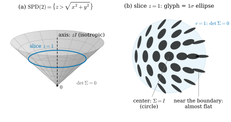
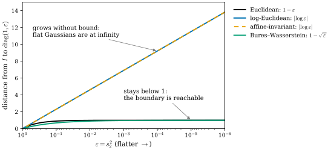
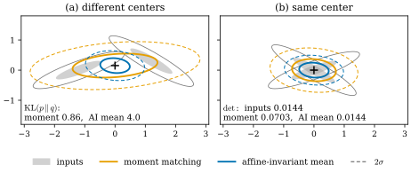

29.4 The Space of Covariances
Goals
- \(\mathrm{SPD}(3)\)가 \(\mathrm{Sym}(3) \cong \R^6\) 안의 open convex cone이고 tangent space가 \(\mathrm{Sym}(3)\)임을 설명하고, \(\mathrm{SPD}(2)\)를 \(\R^3\)의 cone으로 그려 읽을 수 있다.
- Euclidean, log-Euclidean, affine-invariant, Bures–Wasserstein metric의 geodesic(보간) 공식을 쓰고, 각 metric이 무엇에 불변이며 어떤 curvature를 가지는지, flat Gaussian을 얼마나 멀리 두는지 비교할 수 있다.
- 두 납작한 Gaussian의 보간에서 swelling effect(부피가 중간에 부푸는 현상)를 계산하고 설명할 수 있다.
- 여러 Gaussian을 하나로 합치는 moment matching이 \(\mathrm{KL}(p\,\|\,q)\)를 최소화함을 보이고, Riemannian 평균과 목적이 어떻게 다른지, 3DGS의 split과 clone이 이 공간에서 무엇인지 말할 수 있다.
Prerequisites
- Section 29.1: \(\Sigma\)의 eigen decomposition과 \(1\sigma\) ellipsoid, 변환 법칙(Proposition 29.1.3). Section 29.2: \((q, s)\)를 성분별로 평균하면 안 되는 이유. Section 29.3: covariance를 더하는 일
- Section 0.8: Riemannian metric, length와 distance (0.8.2), geodesic과 \(\exp\)/\(\log\), curvature와 model space, Fréchet mean(In computer vision: 회전의 평균)
- 행렬 함수: symmetric matrix \(\Sigma = V\diag(\lambda_i)V^{\mathsf T}\)에 대해 \(\log\Sigma = V\diag(\log\lambda_i)V^{\mathsf T}\), \(\Sigma^{t} = V\diag(\lambda_i^t)V^{\mathsf T}\)
Motivation
Section 29.3까지는 Gaussian 하나를 화면으로 보내는 일을 보았다. 3DGS를 쓰다 보면 Gaussian을 여럿 함께 다뤄야 할 때가 많다. 멀리서 볼 때 쓸 거친 표현(LOD)이나 압축을 위해 비슷한 Gaussian 여럿을 하나로 합치고, 동적 장면에서는 두 시각의 Gaussian 사이를 보간하고, densification에서는 Gaussian 하나를 둘로 나눈다. Section 29.2는 이런 일을 저장된 \((q, s)\)로 하면 대표의 선택에 따라 답이 달라지므로 \(\Sigma\)의 공간에서 해야 한다고 했다.
그런데 \(\Sigma\)의 공간에서 “두 \(\Sigma\)의 중간”은 무엇인가? 성분별 평균은 하나의 답일 뿐이다. Section 0.8의 말로 하면 중간은 geodesic의 중점이고, geodesic은 metric이 정한다. 이 절은 \(\mathrm{SPD}(3)\)이 어떤 manifold인지 보고, 그 위에서 널리 쓰이는 metric 넷을 나란히 비교한다. 같은 두 Gaussian의 “중간”이 metric에 따라 눈에 띄게 다르다.
\(\mathrm{SPD}(3)\) Is an Open Convex Cone
Proposition 29.4.1 (the space of covariances). \(\mathrm{SPD}(n)\)은 \(n \times n\) symmetric matrix 전체 \(\mathrm{Sym}(n) \cong \R^{n(n+1)/2}\)의 open subset이고, convex이며, 양수배에 대해 닫혀 있다(convex cone). 따라서 \(\mathrm{SPD}(n)\)은 \(n(n+1)/2\)차원 manifold이고(\(n = 3\)이면 6차원), 각 점의 tangent space는 \(T_\Sigma\mathrm{SPD}(n) = \mathrm{Sym}(n)\)이다. 경계 \(\{\det\Sigma = 0\}\)는 positive semidefinite이지만 invertible이 아닌 행렬, 곧 어떤 방향으로 두께가 \(0\)인 Gaussian이다.
Derivation. 가장 작은 eigenvalue \(\lambda_{\min}(\Sigma) = \min_{\abs{v} = 1} v^{\mathsf T}\Sigma v\)는 \(\Sigma\)의 연속함수이므로 \(\{\lambda_{\min} \gt 0\}\)은 open이다. \(\Sigma_0, \Sigma_1\)이 SPD이면 \(0 \le t \le 1\)에 대해 \(v^{\mathsf T}\big((1-t)\Sigma_0 + t\Sigma_1\big)v\)는 양수 \(v^{\mathsf T}\Sigma_0v\)와 \(v^{\mathsf T}\Sigma_1v\)의 convex combination이므로 양수이고, \(c \gt 0\)이면 \(c\Sigma\)도 SPD다. vector space의 open subset은 같은 차원의 manifold이고(Proposition 11.4.3), 그 tangent space는 vector space 자체다.
6차원은 그릴 수 없으므로 \(\mathrm{SPD}(2)\)(3차원)를 보자. \(2 \times 2\) symmetric matrix를
로 쓰면 eigenvalue는 \(z \pm \sqrt{x^2 + y^2}\)이다. 따라서 \(\mathrm{SPD}(2) = \{z \gt \sqrt{x^2 + y^2}\}\)는 \((x, y, z)\) 공간의 둥근 cone의 안쪽이다. 좌표의 뜻도 읽힌다. 높이 \(z = \tr\Sigma/2\)는 크기, 축에서의 거리 \(r = \sqrt{x^2 + y^2}\)는 두 eigenvalue의 차의 절반(anisotropy), 축 둘레의 각 \(\psi\)는 장축 방향의 두 배다(장축이 \(\psi/2\) 방향).

Figure 29.4.1의 (b)에서 가운데의 둥근 glyph에서 바깥쪽으로 가면 glyph가 점점 납작해진다. 경계 위에서는 한 eigenvalue가 \(0\), 곧 두께가 \(0\)인 Gaussian이다. cone은 convex이므로 두 점을 잇는 선분 \((1-t)\Sigma_0 + t\Sigma_1\)은 늘 안에 있다. 그래서 성분별 평균도 SPD다. 그러나 그것이 “좋은” 중간인지는 다른 문제다.
Four Metrics on \(\mathrm{SPD}(3)\)
tangent space가 \(\mathrm{Sym}(3)\)이므로, metric은 각 \(\Sigma\)에서 symmetric matrix 두 개 \(U, V\)를 받아 수를 내는 inner product \(g_\Sigma(U, V)\)다. 아래는 문헌에서 널리 쓰이는 넷이다. 각각의 geodesic \(\Sigma(t)\) (\(0 \le t \le 1\), \(\Sigma(0) = \Sigma_0\), \(\Sigma(1) = \Sigma_1\))이 두 covariance의 보간이다.
Definition 29.4.2 (four metrics on SPD and their geodesics). \(\Sigma \in \mathrm{SPD}(n)\), \(U, V \in \mathrm{Sym}(n)\)이다.
- Euclidean: \(g^{\mathrm E}_\Sigma(U, V) = \tr(UV)\)(Frobenius inner product). geodesic과 거리는
- log-Euclidean [Arsigny06]: matrix logarithm \(\log\colon \mathrm{SPD}(n) \to \mathrm{Sym}(n)\)으로 Frobenius inner product를 당긴 metric.
- affine-invariant [PennecFA06]: \(g^{\mathrm{AI}}_\Sigma(U, V) = \tr(\Sigma^{-1}U\Sigma^{-1}V)\).
- Bures–Wasserstein [Bhatia19], [Takatsu11]: \(g^{\mathrm{BW}}_\Sigma(U, V) = \tfrac12\tr(L_U V)\), 여기서 \(L_U\)는 \(\Sigma L_U + L_U\Sigma = U\)의 해다. \(T = \Sigma_0^{-1/2}\big(\Sigma_0^{1/2}\Sigma_1\Sigma_0^{1/2}\big)^{1/2}\Sigma_0^{-1/2}\)으로 쓰면
\(d_{\mathrm{BW}}\)은 평균이 같은 두 Gaussian distribution 사이의 Wasserstein distance \(W_2\)이고, 평균이 다르면 \(W_2^2 = \abs{\mu_0 - \mu_1}^2 + d_{\mathrm{BW}}^2\)이다. \(T\)는 \(\mathcal N(0, \Sigma_0)\)을 \(\mathcal N(0, \Sigma_1)\)으로 보내는 optimal transport map이고, geodesic은 \(x \mapsto (1-t)x + tTx\)로 점들을 직선으로 옮겨 얻는다.
Verification: verify/v-29-4-space-of-covariances.py(각 geodesic의 metric-length가 거리 공식과 같음을 수치 적분으로 확인)
네 metric이 무엇을 지키는지가 차이를 만든다. affine-invariant metric은 이름 그대로 모든 invertible \(A\)에 대해 \(d_{\mathrm{AI}}(A\Sigma_0A^{\mathsf T}, A\Sigma_1A^{\mathsf T}) = d_{\mathrm{AI}}(\Sigma_0, \Sigma_1)\)이다. (29.1.5)에 의해 좌표를 \(x \mapsto Ax + b\)로 바꾸면 모든 covariance가 \(\Sigma \mapsto A\Sigma A^{\mathsf T}\)로 바뀌므로, affine-invariant 보간과 평균은 world coordinate system의 회전, 단위, 축마다 다른 정규화에 전혀 의존하지 않는다. 대가는 계산(행렬 제곱근과 logarithm)이다. log-Euclidean은 \(\log\)으로 \(\mathrm{Sym}(n)\)이라는 vector space에 옮겨 거기서 평평하게 계산하므로 빠르고, 회전과 균일한 scaling에는 불변이지만 일반적인 \(A\)에는 불변이 아니다. Euclidean과 Bures–Wasserstein은 회전에만 불변이다.
| metric | invariant under | sectional curvature | flat Gaussian (\(\det \to 0\)) | \(\det\Sigma(t)\) |
|---|---|---|---|---|
| Euclidean | rotations | \(0\) | finite distance | swells |
| log-Euclidean | rotations, uniform scaling | \(0\) | infinitely far | \(\det\Sigma_0^{1-t}\det\Sigma_1^{t}\) |
| affine-invariant | all \(\Sigma \mapsto A\Sigma A^{\mathsf T}\) | \(\le 0\) | infinitely far | \(\det\Sigma_0^{1-t}\det\Sigma_1^{t}\) |
| Bures–Wasserstein | rotations | \(\ge 0\) | finite distance | swells |
curvature는 정성적으로만 적는다. Euclidean과 log-Euclidean은 \(\mathrm{Sym}(n)\)의 평평한 metric을 옮긴 것이므로 curvature가 \(0\)이다. affine-invariant metric은 sectional curvature가 \(0\) 이하이고 complete이다. Section 0.8의 hyperbolic plane과 같은 쪽이며, 그래서 Fréchet mean이 언제나 하나뿐이다 [PennecFA06]. Bures–Wasserstein metric은 sectional curvature가 \(0\) 이상이다 [Takatsu11]. \(\mathrm{SPD}(2)\)에서는 이 부호들을 기호계산으로 확인할 수 있다. affine-invariant metric의 sectional curvature는 \(-1/2\)과 \(0\) 사이에 있고, \(\det\)가 일정한 cross-section에 접하는 방향으로는 정확히 \(-1/2\)이다. 이 값은 Definition 29.4.2의 정규화 \(g^{\mathrm{AI}} = \tr(\Sigma^{-1}U\Sigma^{-1}V)\)에 대한 것이다. metric에 상수 \(c\)를 곱하면 curvature는 \(1/c\)배가 되므로, 평균이 \(0\)인 Gaussian family의 Fisher information metric \(\tfrac12\tr(\Sigma^{-1}U\Sigma^{-1}V)\)으로 재면 같은 범위가 \([-1, 0]\)이 된다. 부호는 정규화에 무관하다.

Figure 29.4.2는 표의 넷째 열을 그림으로 보인다. 둥근 Gaussian에서 출발해 한 축을 계속 얇게 만들면, 파랑과 주황(log-Euclidean, affine-invariant)의 거리는 직선으로 끝없이 늘고 검정과 초록(Euclidean, Bures–Wasserstein)의 거리는 1 아래에서 멈춘다. 3DGS의 log-scale chart((29.2.4))는 앞의 쪽이다. \(s_2 \to 0\)은 \(\log s_2 \to -\infty\)이므로, scale 좌표로 보면 Gaussian을 완전히 납작하게 만드는 데는 무한히 긴 길이 필요하다. 이것은 \(\Sigma\)가 경계 밖으로 나가는 일이 없다는 장점이고, 동시에 surfel처럼 완전히 납작한 Gaussian은 극한으로만 얻는다는 뜻이다(Section 30.3의 2D Gaussian은 처음부터 경계 위에서 산다).
Interpolation and the Swelling Effect
두 metric이 실제로 얼마나 다른 답을 주는지 보자. 두 납작한 2D Gaussian \(\Sigma_0 = \diag(1, 0.15^2)\)과, 그것을 \(70^\circ\) 돌린 \(\Sigma_1\) 사이를 네 metric의 geodesic으로 보간한다. 3D에서 surfel처럼 납작한 Gaussian 둘을 보간하는 상황의 cross-section이다.
![위 패널 (a)에는 네 줄의 ellipse가 있다. 각 줄은 왼쪽 t = 0의 가로로 납작한 ellipse에서 오른쪽 t = 1의 70도 기운 납작한 ellipse까지 다섯 개의 ellipse를 보인다. Euclidean 줄(검정)은 가운데 t = 0.5에서 크고 둥근 ellipse가 되며 그 아래에 det = 0.2334, ratio 1.40이라고 적혀 있다. log-Euclidean 줄(파랑)과 affine-invariant 줄(주황)은 가운데에서 작은 ellipse가 되며 det = 0.0225이고, ratio는 각각 1.91과 1.40이다. Bures–Wasserstein 줄(초록)은 가운데에서 길쭉하지만 넓은 ellipse이며 det = 0.0604, ratio 2.61이다. 아래 패널 (b)는 가로축 t, 세로축 det Σ(t)인 그래프이고 범례가 위쪽 가운데에 있다. 검정 곡선은 0.0225에서 0.23 근처까지 크게 솟았다가 내려오고, 초록 곡선은 0.06 근처까지 조금 솟으며, 파랑과 주황 점선은 0.0225에서 평평하게 겹친다.](figures/fig-29-4-3-interpolation.svg)
Figure 29.4.3의 (a)를 위에서 아래로 보자. 맨 위 줄(Euclidean)의 가운데 ellipse는 양 끝의 납작한 ellipse보다 훨씬 크고 둥글다. 가로로 납작한 것과 비스듬히 납작한 것을 성분별로 평균하면 두 방향의 퍼짐이 모두 남아 “덮는 영역”이 커지기 때문이다. (b)의 검은 곡선이 그 부피(\(\det\))를 잰다. 중간에서 10배까지 부푼다. 이 현상을 swelling effect라 한다. 둘째와 셋째 줄(log-Euclidean, affine-invariant)은 부피가 일정하다. 실제로 두 metric(log-Euclidean, affine-invariant)에서는 \(\det\)가 geodesic을 따라 기하평균으로 변한다.
log-Euclidean에서는 \(\log\det\Sigma = \tr\log\Sigma\)가 \(t\)의 일차함수이기 때문이고, affine-invariant에서는 \(\det\big(\Sigma_0^{1/2}M^t\Sigma_0^{1/2}\big) = \det\Sigma_0(\det M)^t\)이기 때문이다. 맨 아래 줄(Bures–Wasserstein)은 부피가 조금 부풀지만 모양은 가장 길쭉하게 남는다. 두 distribution의 질량을 직선으로 옮기는(optimal transport) 보간이기 때문이다. 두 covariance의 축이 같으면(commute하면) 이 보간은 표준편차를 linear interpolation하는 것과 정확히 같다(Exercise 29.4.1). 분산을 섞는 Euclidean보다 덜 부푸는 이유다.
어느 metric도 “납작한 disk가 모양을 유지한 채 돌아가는” 보간을 주지는 않는다(가운데의 장단축 비가 모두 6.67보다 작다). 그런 보간은 \(R\)을 SLERP하고 \(\log s\)를 linear interpolation하는 \((R, s)\) 보간이다. 그러나 이것은 Proposition 29.2.1의 대표 문제(어느 축끼리 짝지을 것인가)를 먼저 풀어야 하고, scale이 비슷한 축에서는 짝이 불안정하다. 무엇을 지킬지에 따라 고를 일이다.
Merging Gaussians: Moment Matching
평균이 서로 다른 Gaussian 여럿을 하나로 합치는 일은 보간과 성격이 다르다. 가중치 \(w_i \ge 0\)(\(\sum_i w_i = 1\))를 준 mixture \(p = \sum_i w_i\,\mathcal N(\mu_i, \Sigma_i)\)를 Gaussian 하나 \(q = \mathcal N(\mu, \Sigma)\)로 바꾸고 싶다. 가장 흔한 처방은 mixture의 평균과 covariance를 그대로 쓰는 moment matching이다.
둘째 항 \((\mu_i - \mu)(\mu_i - \mu)^{\mathsf T}\)이 평균들이 흩어진 정도를 covariance에 더한다. 이 처방에는 정확한 최적성이 있다.
Proposition 29.4.3 (moment matching minimizes \(\mathrm{KL}(p\,\|\,q)\)). \(p\)가 평균 \(\mu_p\), covariance \(\Sigma_p\)(invertible)를 가진 distribution이고 \(\int p\log p\)가 유한할 때, Gaussian \(q\) 가운데 \(\mathrm{KL}(p\,\|\,q) = \int p\log(p/q)\)를 최소로 하는 것은 \(q = \mathcal N(\mu_p, \Sigma_p)\)이다. mixture에 대해서는 이것이 (29.4.7)이다.
Derivation. \(\mathrm{KL}(p\,\|\,q) = \int p\log p - \int p\log q\)이고 앞 항은 \(q\)에 무관하다. \(q = \mathcal N(\mu, \Sigma)\)이면
\[ \begin{aligned} -\int p\log q &= \tfrac12\log\det(2\pi\Sigma) \\ &\quad + \tfrac12\tr\big(\Sigma^{-1}(\Sigma_p + (\mu_p - \mu)(\mu_p - \mu)^{\mathsf T})\big) \end{aligned} \]
이다. 이것은 \(p\)를 평균과 covariance로만 본다. \(\mu = \mu_p\)일 때 둘째 항이 가장 작고, 남은 \(\tfrac12\big(\log\det\Sigma + \tr(\Sigma^{-1}\Sigma_p)\big)\)을 \(\Sigma\)로 미분해 \(0\)으로 두면 \(\Sigma^{-1} - \Sigma^{-1}\Sigma_p\Sigma^{-1} = 0\), 곧 \(\Sigma = \Sigma_p\)이다. \(P = \Sigma^{-1}\)로 쓰면 이 함수는 \(\tfrac12\big(-\log\det P + \tr(P\Sigma_p)\big)\)이고 \(P\)에 대해 convex이므로, 이 유일한 critical point가 최소다. mixture의 covariance는 “각 성분 안의 퍼짐 + 성분 평균들의 퍼짐”이므로 (29.4.7)이다.
\(\mathrm{KL}(p\,\|\,q)\)를 줄이는 \(q\)는 \(p\)가 질량을 가진 곳을 빠뜨리지 않으려 한다(\(p \gt 0\)인데 \(q \approx 0\)이면 벌이 크다). 곧 moment matching은 덮는 Gaussian이다. 반면 앞 절의 Riemannian 평균은 covariance들의 대표 모양을 찾는다. 두 목적은 다르다.

Figure 29.4.4의 (a)를 보자. 두 회색 Gaussian이 떨어져 있을 때 주황 ellipse는 둘을 모두 감싸고, 파란 ellipse는 둘 사이의 빈 곳에 작게 놓인다. mixture를 대신하는 Gaussian으로는 주황이 낫다(KL 0.86 대 4.0). (b)처럼 중심이 같으면 사정이 달라진다. 주황은 성분별 평균, 곧 Figure 29.4.3의 Euclidean 보간의 중점과 같아져 부피가 5배 부푼다. 같은 surface 조각을 두 시점에서 추정한 두 Gaussian을 합치는 경우라면, 덮는 범위보다 대표 모양(파랑)이 원하는 답일 것이다.
Split and Clone in \(\mathrm{SPD}(3)\)
3DGS의 adaptive density control은 두 연산으로 Gaussian을 늘린다 [Kerbl23]. 두 연산 모두 view-space position gradient가 큰 Gaussian(기준은 Section 29.5)에 적용되고, 크기로 둘을 가른다. 공식 구현에서는 가장 큰 scale \(\max_i s_i\)가 scene extent의 1%(percent_dense \(= 0.01\)) 이하이면 clone, 그보다 크면 split이다.
- clone: 재구성이 부족한 곳의 작은 Gaussian을 복사한다. 논문은 같은 크기의 사본을 만들어 positional gradient 방향으로 옮긴다고 설명한다. 공식 구현은 모든 parameter를 그대로 복사해 사본을 같은 위치에 두고, 이어지는 최적화가 둘을 갈라 놓는다(새 사본의 Adam moment는 \(0\)에서 시작한다).
- split: 분산이 큰 곳의 큰 Gaussian을 둘로 나눈다. 원래 Gaussian을 probability distribution으로 써서 새 위치 둘을 sample하고, scale을 \(\varphi = 1.6\)으로 나눈 Gaussian 둘로 바꾼다(논문은 이 값을 실험으로 정했다고 밝힌다). 공식 구현에서는 자식 수 \(N = 2\), 나누는 값이 \(0.8N = 1.6\)이고, 부모는 지운다. rotation, opacity, SH coefficient는 부모의 것을 그대로 받는다.
Example 29.4.4 (split as an inverse of merging). split의 두 자식은 covariance가 \(\Sigma/1.6^2 = \Sigma/2.56\)이고 축과 장단축 비는 부모와 같다. \(\mathrm{SPD}(3)\)에서 이것은 부모에서 출발해 반직선 \(\{c\Sigma : c \gt 0\}\)을 따라 원점 쪽으로 옮긴 것이다. 이 반직선은 네 metric 모두에서 geodesic이다(parametrization만 다르다. affine-invariant와 log-Euclidean에서는 \(t \mapsto e^t\Sigma\)). 곧 split은 모양을 그대로 두고 크기만 줄이는, 이 공간에서 가장 곧은 움직임이다. 그렇다면 두 자식을 다시 moment matching((29.4.7))으로 합치면 부모가 돌아올까? 두 위치 \(x_1, x_2\)가 \(\mathcal N(\mu, \Sigma)\)에서 독립으로 뽑히면
\[ \begin{aligned} \mathbb{E}\big[\tfrac12\textstyle\sum_i(x_i - \bar x)(x_i - \bar x)^{\mathsf T}\big] &= \tfrac14\mathbb{E}[(x_1 - x_2)(x_1 - x_2)^{\mathsf T}] \\ &= \tfrac12\Sigma \end{aligned} \]
이므로, 두 자식의 moment의 기댓값은
\[ \frac{\Sigma}{2.56} + \frac{\Sigma}{2} \approx 0.89\,\Sigma \]
이다. 평균은 \(\mu\) 그대로다. 곧 split은 평균적으로 moment matching을 거꾸로 한 것과 가깝고(부모의 퍼짐의 89%를 지킨다), 남는 차이는 이후의 최적화가 조정한다. clone은 \(\Sigma\)를 바꾸지 않으므로 \(\mathrm{SPD}(3)\)에서는 제자리이고, 변화는 개수(그리고 이후의 위치)에만 있다.
Verification: verify/v-29-4-space-of-covariances.py(Monte Carlo로 \(0.89\Sigma\) 확인)
Summary
- \(\mathrm{SPD}(3)\)은 \(\mathrm{Sym}(3) \cong \R^6\)의 open convex cone이고 tangent space는 \(\mathrm{Sym}(3)\)이다. \(\mathrm{SPD}(2)\)는 \(\R^3\)의 둥근 cone이고, 경계는 납작한 Gaussian이다.
- Euclidean, log-Euclidean, affine-invariant, Bures–Wasserstein metric은 각각 직선, \(\log\) 공간의 직선, \(\Sigma_0^{1/2}(\Sigma_0^{-1/2}\Sigma_1\Sigma_0^{-1/2})^t\Sigma_0^{1/2}\), optimal transport의 보간을 geodesic으로 준다. affine-invariant만 모든 좌표 변환에 불변이다.
- Euclidean과 Bures–Wasserstein 보간은 부피가 중간에 부푼다(swelling). log-Euclidean과 affine-invariant는 \(\det\)를 기하평균으로 보간한다. 어느 것도 납작함을 지키지는 않는다.
- curvature: Euclidean·log-Euclidean은 \(0\), affine-invariant는 \(\le 0\)(평균이 유일), Bures–Wasserstein은 \(\ge 0\)이다. 납작한 Gaussian은 log-Euclidean·affine-invariant에서 무한히 멀다.
- moment matching은 \(\mathrm{KL}(p\,\|\,q)\)를 최소화하는 “덮는” 병합이고, Riemannian 평균은 “대표 모양”이다. split은 평균적으로 moment matching의 역에 가깝다(\(0.89\Sigma\)).
다음 절에서는 학습 자체를 본다. 3DGS의 parameter는 \(\R^3\), \(\R^4 \setminus \{0\}\), log-scale, logit, SH coefficient로 이루어진 공간에 있고, gradient는 그 위의 covector다. covector를 update 방향으로 바꾸려면 metric이 필요한데, 좌표를 고르는 것이 곧 metric을 고르는 것이다.
Quick check
Exercise 29.4.1 ★ \(\Sigma_0 = \diag(4, 1)\), \(\Sigma_1 = \diag(1, 4)\)일 때 네 metric의 geodesic의 중점(\(t = 1/2\))과 그 \(\det\)를 구하여라.
Solution
두 행렬이 대각이라 모든 계산이 성분별로 된다. Euclidean: \(\diag(2.5, 2.5)\), \(\det = 6.25\). log-Euclidean: \(\exp\big(\tfrac12(\log 4 + 0)\big) = 2\)이므로 \(2I\), \(\det = 4\). affine-invariant: \(\Sigma_0^{-1/2}\Sigma_1\Sigma_0^{-1/2} = \diag(1/4, 4)\)의 \(1/2\)제곱은 \(\diag(1/2, 2)\)이고, \(\Sigma_0^{1/2}\diag(1/2, 2)\Sigma_0^{1/2} = \diag(2, 2)\)이므로 \(2I\), \(\det = 4\). Bures–Wasserstein: 표준편차를 linear interpolation하므로 \(\big((2 + 1)/2\big)^2 = 2.25\)이고 \(2.25\,I\), \(\det = 5.0625\). 양 끝의 \(\det\)는 4이므로 Euclidean과 Bures–Wasserstein은 부풀고 나머지 둘은 그대로다. 모두 둥근 Gaussian이 된다.
Verification: verify/v-29-4-space-of-covariances.py
Exercise 29.4.2 ★ 3DGS의 Gaussian 하나가 학습 중에 \(s_3\)이 \(10^{-2}\)에서 \(10^{-3}\)으로 납작해졌다(\(s_1 = s_2 = 1\)). \(\Sigma\)의 Euclidean 거리와 affine-invariant 거리로 각각 얼마나 움직였는가? 어느 쪽이 log-scale parameter \(\ell_3 = \log s_3\)의 변화와 비례하는가?
Solution
\(\Sigma\)는 \(\diag(1, 1, 10^{-4})\)에서 \(\diag(1, 1, 10^{-6})\)으로 갔다. Euclidean 거리는 \(10^{-4} - 10^{-6} \approx 9.9 \times 10^{-5}\)로 거의 \(0\)이다. affine-invariant 거리는 \(\abs{\log(10^{-6}/10^{-4})} = \ln 100 \approx 4.61\)이다. \(\ell_3\)의 변화는 \(\ln 10 \approx 2.30\)이고, \(\log\lambda_3 = 2\ell_3\)이므로 affine-invariant(그리고 log-Euclidean) 거리는 \(\ell_3\)의 변화의 정확히 2배다. log-scale은 이 metric들의 눈으로 scale을 잰다.
Verification: verify/v-29-4-space-of-covariances.py
Exercise 29.4.3 ★ 중심이 \((0, 0)\)과 \((2, 0)\)이고 둘 다 \(s = 0.5\)인 둥근 2D Gaussian(가중치 각 \(1/2\))을 moment matching으로 합친 Gaussian을 구하여라. 결과는 둥근가?
Solution
(29.4.7)에서 \(\mu = (1, 0)\)이고 \(\mu_i - \mu = (\mp 1, 0)\)이므로 \(\Sigma = 0.25\,I + \tfrac12\big(\diag(1, 0) + \diag(1, 0)\big) = \diag(1.25,\ 0.25)\)이다. 둥근 두 Gaussian이 가로로 늘어선 것을 덮어야 하므로 결과는 가로로 길쭉한 ellipse(장단축 비 \(\sqrt5 \approx 2.24\))다. Riemannian 평균만 쓰면 \(0.25\,I\)라는 둥근 Gaussian이 되어 두 입력 사이의 빈 곳에 놓인다.
Verification: verify/v-29-4-space-of-covariances.py
Exercise 29.4.4 ★★ affine-invariant metric \(g^{\mathrm{AI}}_\Sigma(U, V) = \tr(\Sigma^{-1}U\Sigma^{-1}V)\)이 \(\Sigma \mapsto A\Sigma A^{\mathsf T}\)(\(A\) invertible)에 의해 보존됨을 보여라. 이것이 왜 “world 좌표의 단위를 바꿔도 보간이 같다”는 뜻인가?
Solution
map \(\Sigma \mapsto A\Sigma A^{\mathsf T}\)의 differential은 \(U \mapsto AUA^{\mathsf T}\)(linear)이다. 따라서
\[ \begin{aligned} & g^{\mathrm{AI}}_{A\Sigma A^{\mathsf T}}(AUA^{\mathsf T}, AVA^{\mathsf T}) \\ &= \tr\big((A\Sigma A^{\mathsf T})^{-1}AUA^{\mathsf T}\,(A\Sigma A^{\mathsf T})^{-1}AVA^{\mathsf T}\big) \\ &= \tr\big(A^{-\mathsf T}\Sigma^{-1}U\Sigma^{-1}VA^{\mathsf T}\big) \\ &= \tr(\Sigma^{-1}U\Sigma^{-1}V) \end{aligned} \]
이다(둘째 줄에서 \(A^{-1}A = I\), \(A^{\mathsf T}A^{-\mathsf T} = I\)를 쓰고, 마지막은 \(\tr(XY) = \tr(YX)\)). metric을 보존하는 map은 geodesic을 geodesic으로 보낸다. 좌표를 \(x \mapsto Ax + b\)로 바꾸면 모든 covariance가 \(A\Sigma A^{\mathsf T}\)로 바뀌므로((29.1.5)), 새 좌표에서 보간한 결과는 옛 좌표에서 보간한 결과를 바꾼 것과 같다. 단위를 미터에서 센티미터로 바꾸는 것은 \(A = 100\,I\)인 경우다.